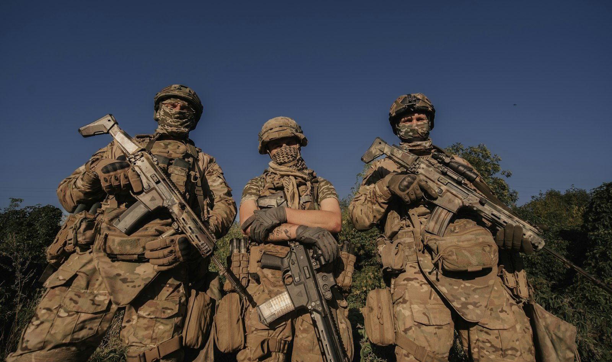

幹員介紹
四大兵種、18 位幹員，各自能做什麼？CS 老玩家該先選誰？

幹員插圖是本站原創的示意圖，不是遊戲官方角色圖：顏色代表兵種，右上角是兵種圖示。資料整理自 2026 年 10 月（Reorientation 賽季）的攻略網站，之後改版可能有變動。中文代號以常見譯名為主，台服譯名可能不同；不確定的只列英文代號。
四大兵種
突擊 Assault
衝鋒、近戰壓制。開鏡移動更快，負責打開局面。
支援 Support
補血、救人、煙霧掩護。救隊友速度更快。
工程 Engineer
反載具、防守器材、區域控制。可用焊槍切割與修理。
偵察 Recon
偵查、標記敵人位置，提供全隊情報。
突擊 Assault
威龍 Vyron
- 推進裝置，可往任意方向快速衝出
- 壓縮空氣發射器
- 黏性高爆炸藥
紅狼 D-Wolf
- 外骨骼超載：高速衝刺與滑鏟
- 擊倒敵人後回血
- 三聯裝榴彈（黏性手雷）
無名 Nox
- 干擾器：移動靜音並加速
- 追蹤飛盤：造成持續傷害並減速
- 被他打傷的敵人回血、救援變慢
疾風 Tempest
- 鑽破掩體，震暈後方敵人
- 翻滾、安全繩拉回原位
- 烽火地帶可自救一次
支援 Support
蜂醫 Stinger
- 自動追蹤的治療手槍，可遠距補血
- 手動操控的煙霧無人機
- 烽火地帶救人不扣血量上限
蠱 Toxik
- 致盲毒氣
- 增益無人機：強化附近隊友
- 蜂群無人機：強化隊友、削弱敵人
蝶 Vlinder
- 救援無人機：遠距救起倒地隊友
- 醫療無人機：跟隨隊友，治療附近的人
Rover
- 軍犬 Clover：追蹤並標記最近的敵人
- 飛鏢步槍：烽火地帶可治療肢體，並削減敵人血量上限
- 2026 年 9 月新加入，季票免費路線可解鎖
Branko
- 參考資料未詳細列出技能，請以遊戲內說明為準
工程 Engineer
牧羊人 Shepherd
- 聲波無人機：壓制敵人
- 可貼在牆上的聲波陷阱
- 受到的爆炸傷害較低
烏魯魯 Uluru
- 導引彈藥，空中分裂成四顆炸彈
- 速凝混凝土掩體
- 燃燒彈，可燒掉掩體
深藍 Sineva
- 重型排爆裝，附全身防爆盾
- 鉤爪槍：把敵人拉過來
- 鐵絲網
Gizmo
- 會腐蝕敵人的爬行機器
- 智慧煙霧地雷
- 巡邏模組，會對抓到的人撒網
N-Two
- 冰凍手雷與冷凍罐
- 寒冷讓敵人減速，直到凍住
- 區域控制能力強
偵察 Recon
露娜 Luna
- 偵測箭：顯示附近敵人位置
- 電擊箭
- 被她打中的敵人會被標記
駭爪 Hackclaw
- 追蹤敵人訊號、訊號解碼器
- 閃光無人機致盲
- 資料飛刀：癱瘓電子設備
銀翼 Raptor
- 追蹤腳印
- 間諜攝影機，標記敵人
- 標記無人機，可投 EMP 手雷
Morse
- 聲納裝置：計算並標記敵人數量
- 干擾器：讓敵人減速、迷失方向
- 烽火地帶聽得更遠
CS 老玩家怎麼選
| 情境 | 建議幹員 | 理由 |
|---|---|---|
| 烽火地帶單排 | 露娜、駭爪 | 偵察資訊能彌補還不熟的地圖，先知道敵人在哪 |
| 跟孩子雙排 | 蜂醫、蠱、Rover | 跟在隊友後面補血、救人、加增益，配合度最高 |
| 想發揮槍法 | 無名、紅狼 | 機動性高，適合主動找人打 |
| 喜歡守點 | N-Two、牧羊人 | 區域控制和陷阱，很像 CS 的道具守點 |
2026 年 10 月的強度排行把 Gizmo、Morse、疾風評得較低，建議等改版加強後再練。
結論
新手先選偵察（露娜、駭爪）拿資訊，或選支援（蜂醫、蠱）跟著孩子補位。熟悉地圖和節奏後，再換突擊幹員發揮 CS 的槍法。